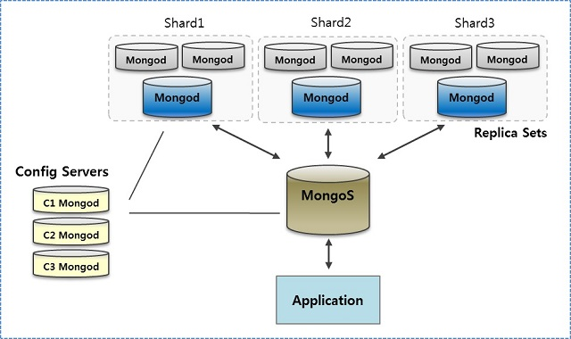

Who are we ?
Summary
- One Docker Compose to run them all
- Monitoring with JHipster Console
- JHipster Microservices Configuration
Microservices, Gateway, Registry, Dashboards ...
+ +
How do I run all these apps ?
yo jhipster:docker-compose
A JHipster subgenerator.

What does it do ?
Get all the necessary files into ONE docker-compose YAML
So you can easily run all the necessary container :
- Applications
- Databases
- Registry
- Monitoring
How does it works ?

To run all this without the subgenerator, we would need to :
- Launch each container one by one
- Create a shared config file (to share the JWT token)
- Launch the registry container
≈5 terminal tabs and alot of time...

Let's go inside a directory aside of our apps and run
cd docker-config
yo jhipster:docker-compose
Let's run everything with one command
docker-compose up -d

What do we have here ?
Here is the (simplified) generated docker-compose file:
version: '2'
services:
jhipster-registry:
extends:
file: jhipster-registry.yml
service: jhipster-registry
accountsmicroservice-app:
image: accountsmicroservice
external_links:
- accountsmicroservice-mysql:mysql
- jhipster-registry:registry
accountsmicroservice-mysql:
container_name: accountsmicroservice-mysql
image: mysql:5.7.11
hipsterbankgateway-app:
image: hipsterbankgateway
external_links:
- hipsterbankgateway-mysql:mysql
- jhipster-registry:registry
ports:
- 8080:8080
hipsterbankgateway-mysql:
container_name: hipsterbankgateway-mysql
image: mysql:5.7.11
insurances-app:
image: insurances
external_links:
- insurances-mongodb:mongodb
- jhipster-registry:registry
insurances-mongodb:
container_name: insurances-mongodb
image: mongo:3.2.3
Want to scale ?
How to scale a microservice
docker-compose scale accountsmicroservice-app=2
What's Happening ?
- Instances see each other, thanks to Eureka
- The gateway load balance between each instances
- Cache replication with HazelCast (for SQL databases)
How to scale a database
Only available with Cassandra and MongoDB databases.
We are going to scale our MongoDB database: 
Picture from wayneye.com
What we are going to do ?
On the back-end:
- Deploy account-v2 a new (and better) account microservice that introduce breaking changes
- On the gateway, edit routes to redirect API calls to account-v2
On the front-end:
- Switch a toggle to display the new UI
- Back-end and Front-end changes must happen at the same time
- We are not allowed to restart the gateway